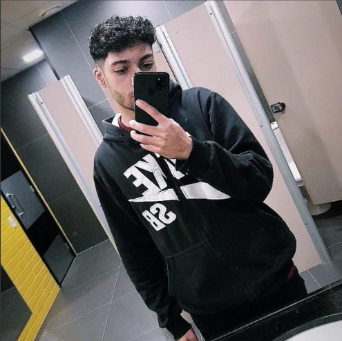

Olá! Sou Alexsandro Ribas Desenvolvedor Back-end Java
Iniciante na arte da programação, estou mergulhando no mundo do desenvolvimento, especialmente focado na área de back-end. Estou animado em aprender a criar aplicativos web que se ajustem e evoluam conforme necessário. Meu objetivo é desenvolver soluções tecnológicas simples, mas eficazes, que possam resolver problemas reais e proporcionar uma experiência valiosa para os usuários. A jornada está apenas começando, e estou empolgado para explorar mais no vasto universo da programação.
Saiba Mais!
